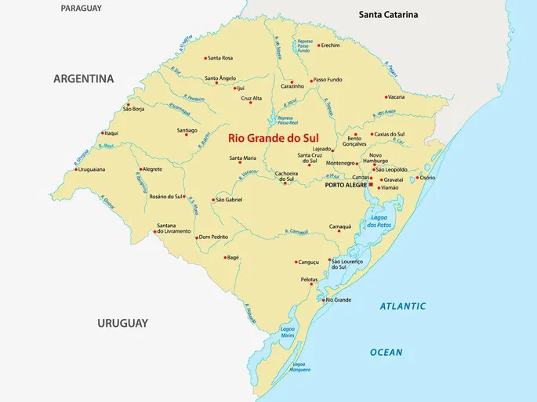
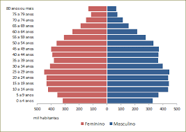

População, Localização e Area
O Rio Grande do Sul está localizado no extremo sul do Brasil. É formado por 497 municípios e sua área total é de 281.707,15 quilômetros quadrados, incluindo as áreas da laguna dos Patos e da lagoa Mirim. Com uma população de 10.882.965 habitantes em 2022, aproximadamente 5,4% da população brasileira, é o sexto estado mais populoso do Brasil.
Diversidade de cultura e de paisagens

Possui uma grande diversidade cultural e de paisagens. Em sua formação étnica, destaca-se a presença de descendentes de povos indígenas, negros e europeus. O relevo apresenta altitudes que atingem até 1.398 metros. O clima é Temperado do tipo Subtropical, caracterizando-se pelas baixas temperaturas no inverno e a vegetação é diversificada, com importantes áreas remanescentes do bioma Mata Atlântica, além de campos nativos que caracterizam o bioma Pampa e as terras altas do planalto Meridional.
Qualidade de Vida
O RS é um dos estados de melhor qualidade de vida do país, com bons resultados em indicadores sociais no contexto brasileiro. Destacam-se os baixos índices de mortalidade infantil, próximo de 10 óbitos por mil nascidos vivos, a esperança de vida ao nascer de 76,4 anos e a taxa de alfabetização superior a 97%.
Economia
A produção econômica no Rio Grande do Sul contribuiu, em 2022, com 6% do Produto Interno Bruto nacional, colocando o estado no quinto lugar entre as unidades da federação. O PIB per capita atingiu cerca de R$ 51 mil/ano em 2022.